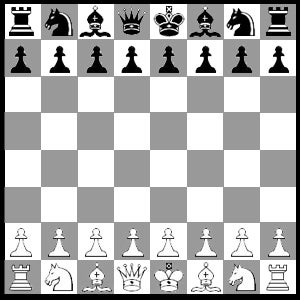

Chess - Solo Project
This Webpage is currently under construction to be similar to the pong page which can be seen here!
Chess was a project I worked on during my 3rd year at Carleton. Our professor gave us an option to recreate any strategy board games such as checkers, catan, chess, etc... I went with chess because it's the most one I was familiar with at the time (nowadays it's definitely catan!).